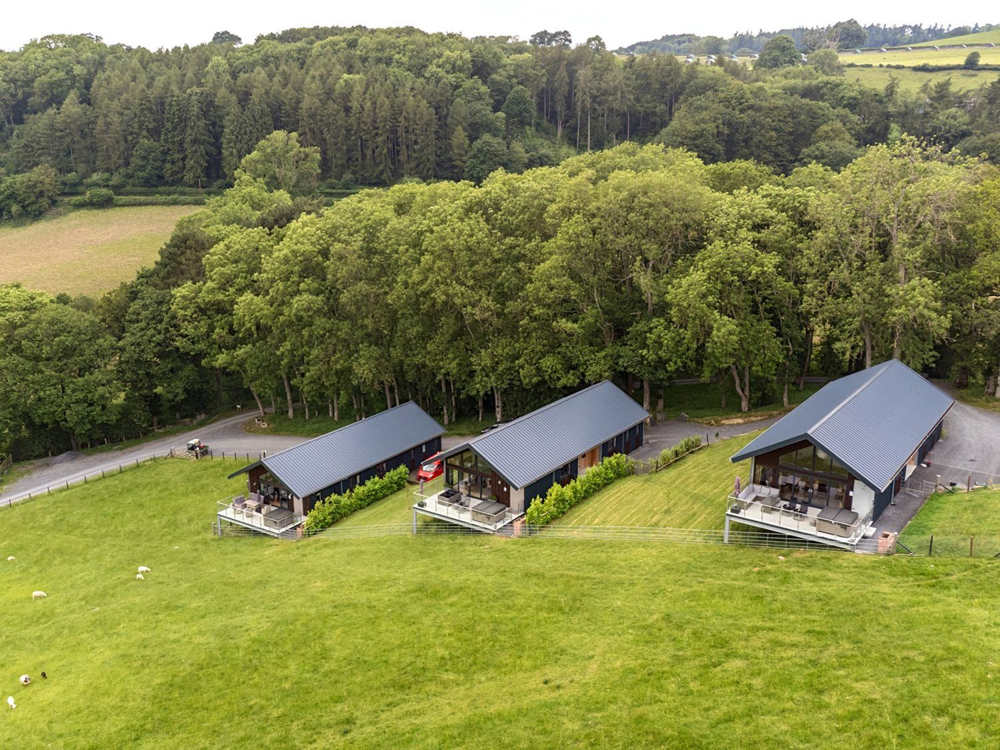

Hot-tub lodges in the Mid Wales hills
Contemporary, dog-friendly lodges set in 2.5 acres of countryside near Berriew, between Welshpool and Newtown. Every lodge has its own hot tub and far-reaching views.
Welcome to Llifior Lodges
Our lodges sit on a hillside near the village of Berriew in Powys, looking out over rolling Welsh farmland. They are named after the birds you will see here: the red kite, buzzard, blackbird and blue tit.
Inside you get open-plan living with big windows, well-equipped kitchens and comfortable super-king beds. Outside, each lodge has a private hot tub on its own deck. There are walks from the door, red kites overhead and dark skies for stargazing. You may also meet our friendly goats and sheep.
Why book direct? You deal with us, the owners, so you can ask questions, make special requests and get our best direct rate. [Confirm direct-booking offer, e.g. "Best price guaranteed when you book with us"]
At a glance
- 4 lodges sleeping 2, 6 and 8 (groups: book several together)
- Private hot tub at every lodge
- Up to 2 dogs welcome per lodge
- Bed linen and towels included
- On-site EV charger (extra cost, bring your cable)
- Check-in 16:00, check-out 10:00
- Berriew & Montgomery 3 miles, Welshpool 6 miles
Our lodges
Loading lodges…
Where we are
We are in the countryside near Garthmyl, close to Berriew in the Severn valley of Mid Wales. Montgomery, with its Georgian town square and castle, is 3 miles away. Welshpool and Powis Castle are about 6 miles away, and Newtown is 8 miles. Shrewsbury is around 45 minutes by car.

What guests say
[Add 2-3 guest quotes, with permission. Your listings currently show 5.0/5 ratings on Sykes (41 reviews for Bwncath, 64 for Barcud Coch). Link to or quote your own reviews only.]